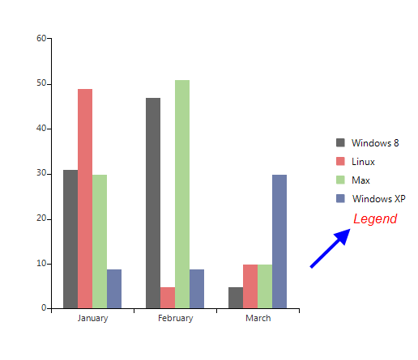

Legend
RadChartView has built-in support for legends – descriptions about the charts on the plot. The items displayed in the legend
are series specific i.e. for the pie chart the data points are shown in the legend, whereas for line series only one item is shown for each series.
Show Legend
The ShowLegend property of RadChartView controls whether the legend is visible or not. The default value is
false. The legend supports showing a legend title, which text can be set via the LegendTitle property.
__[C#] __
this.radChartView1.ShowLegend = true;
this.radChartView1.LegendTitle = "Legend";
__[VB.NET] __
Me.RadChartView1.ShowLegend = True
Me.RadChartView1.LegendTitle = "Legend"

Customize legend
The location of the title can be modified by the TitlePosition property. Additional modification of
the title can be introduced by using the TitleElement:
__[C#] __
this.radChartView1.ChartElement.LegendElement.TitlePosition = TitlePosition.Bottom;
this.radChartView1.ChartElement.LegendElement.TitleElement.Font = new Font("Arial", 12, FontStyle.Italic);
this.radChartView1.ChartElement.LegendElement.TitleElement.ForeColor = Color.Red;
__[VB.NET] __
Me.RadChartView1.ChartElement.LegendElement.TitlePosition = TitlePosition.Bottom
Me.RadChartView1.ChartElement.LegendElement.TitleElement.Font = New Drawing.Font("Arial", 12, Drawing.FontStyle.Italic)
Me.RadChartView1.ChartElement.LegendElement.TitleElement.ForeColor = Drawing.Color.Red

You can dock the legend to each of the four sides of the control by setting the LegendPosition property.
__[C#] __
this.radChartView1.ChartElement.LegendPosition = LegendPosition.Bottom;
__[VB.NET] __
Me.RadChartView1.ChartElement.LegendPosition = LegendPosition.Bottom

Alternatively, you can set it to float over the chart view. Here is how to set the legend to stay at position
200 , 0 over the chart area.
The LegendOffset property is only taken into consideration when
the LegendPosition is set to “Float”.
__[C#] __
this.radChartView1.ChartElement.LegendPosition = LegendPosition.Float;
this.radChartView1.ChartElement.LegendOffset = new Point(200, 0);
__[VB.NET] __
Me.RadChartView1.ChartElement.LegendPosition = LegendPosition.Float
Me.RadChartView1.ChartElement.LegendOffset = New Point(200, 0)

Setup LegendItem
The elements that provide legend items in the case of the Pie chart are the individual data points.
In all other cases it is the series that provide legend items. You can set two properties to each
provider which controls their representation in the legend. These two properties are
IsVisibleInLegend and LegendTitle.
__[C#] __
LineSeries line = new LineSeries();
line.IsVisibleInLegend = true;
line.LegendTitle = "Windows 8";
__[VB.NET] __
Dim line As New LineSeries()
line.IsVisibleInLegend = True
line.LegendTitle = "Windows 8"

Modify LegendItem title
You have access to the items displayed in the legend through the Items property of
the chart legend. This collection gives you access to the actual legend items that the provider creates.
This means that if you change the text in the legend item, the text in the provider (data point or series),
will also change. Let’s say you have added the line series from the previous example to the chart and you
change the title of the legend item through the legend’s Items collection with the
following code, this will actually change the value in the series legend item:
__[C#] __
this.radChartView1.ChartElement.LegendElement.Items[0].Title = "Linux";
__[VB.NET] __
Me.RadChartView1.ChartElement.LegendElement.Items(0).Title = "Linux"

Add/Remove LegendItems
You can add and remove items from the legend through the Items collection. You have to create a new instance of
LegendItem which you will add to the Items collection. You can set the desired style of
the marker through the Element property of the LegendItem.
__[C#] __
LegendItem item = new LegendItem();
item.Element.BorderColor = Color.Black;
item.Element.BackColor = Color.Yellow;
item.Title = "Custom item";
this.radChartView1.ChartElement.LegendElement.Items.Add(item);
__[VB.NET] __
Dim item As New LegendItem()
item.Element.BorderColor = Color.Black
item.Element.BackColor = Color.Yellow
item.Title = "Custom item"
Me.RadChartView1.ChartElement.LegendElement.Items.Add(item)

Custom Legend item
You can use your own legend item elements by handling the VisualItemCreating event of the legend.
This allows you to change the way legend items are represented in the legend:
__[C#] __
this.radChartView1.ChartElement.LegendElement.VisualItemCreating +=new LegendItemElementCreatingEventHandler(LegendElement_VisualItemCreating);
__[C#] __
public class CustomLegendItemElement : LegendItemElement
{
public CustomLegendItemElement(LegendItem item)
: base(item)
{
this.Children.Remove(this.MarkerElement);
this.TitleElement.DrawFill = true;
this.TitleElement.DrawBorder = true;
this.StretchHorizontally = true;
}
protected override void Synchronize()
{
base.Synchronize();
this.SyncVisualStyleProperties(this.LegendItem.Element, this.TitleElement);
this.TitleElement.ForeColor = Color.White;
}
}
private void LegendElement_VisualItemCreating(object sender, LegendItemElementCreatingEventArgs e)
{
e.ItemElement = new CustomLegendItemElement(e.LegendItem);
}
__[VB.NET] __
AddHandler Me.RadChartView1.ChartElement.LegendElement.VisualItemCreating, AddressOf LegendElement_VisualItemCreating
__[VB.NET] __
Public Class CustomLegendItemElement
Inherits LegendItemElement
Public Sub New(item As LegendItem)
MyBase.New(item)
Me.Children.Remove(Me.MarkerElement)
Me.TitleElement.DrawFill = True
Me.TitleElement.DrawBorder = True
Me.StretchHorizontally = True
End Sub
Protected Overrides Sub Synchronize()
MyBase.Synchronize()
Me.SyncVisualStyleProperties(Me.LegendItem.Element, Me.TitleElement)
Me.TitleElement.ForeColor = Color.White
End Sub
End Class
Private Sub LegendElement_VisualItemCreating(sender As Object, e As LegendItemElementCreatingEventArgs)
e.ItemElement = New CustomLegendItemElement(e.LegendItem)
End Sub